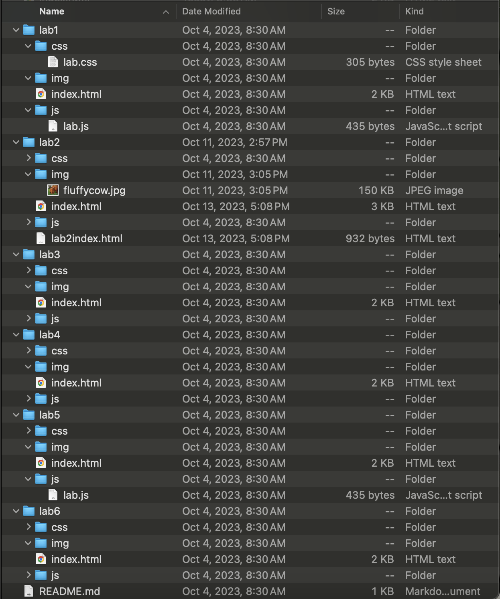

For this lab, we were assigned to create an organized file structure for ART101. We created a file system organizing the HTML, CSS, and JS files within their designated assignment folders which are all within one folder for the class.
The lab seemed confusing at first since there were multiple different file types we had to organize, however, I got the hang of it quickly once I understood what we needed to do.
The following picture is the result of my file organization through this lab.
The following link is my formal
Lab Summary